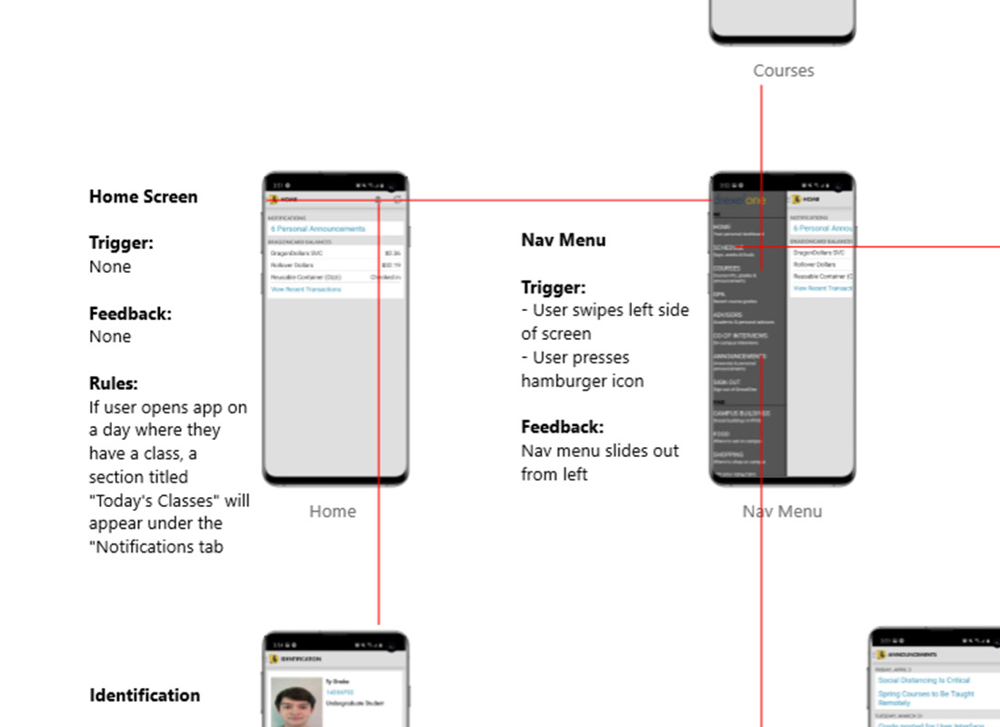
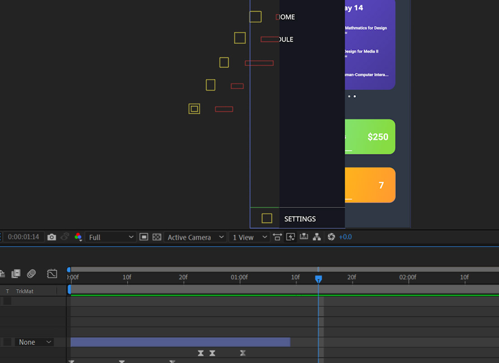
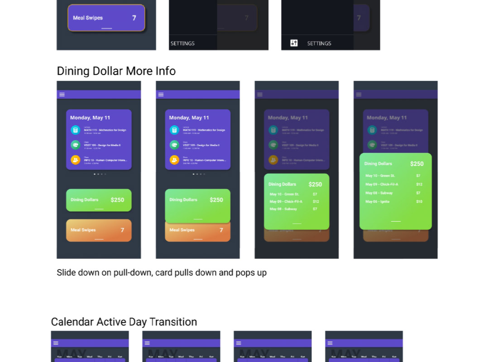

In my third term in school, we were tasked with redesigning the task flow of an application of our choice, this time, focusing on the micro-interactions that encompassed the task-flow. I choose to redesign the Drexel-One application, an application that every student uses to check things such as Meal Swipes, course schedules, and GPA’s.
Instead of using Flinto to create interactions, we had to manually create our interactions from scratch through the use of Adobe After Effects. Before beginning this process, there was extensive sketching and ideation. During this stage, examining the original application and the interaction was essential. Having a baseline to build off of allowed me to create the interactions that I felt would improve the existing application.
I found that the flow of the existing application was lacking engaging interactions and needed an overhauled color-palette. I didn’t adjust the actual flow of how the app worked, and instead focused on making the experience more engaging and visually appealing.
A change to this project from the previous ones was that we were required to build our interaction/animations from scratch through the use of Adobe After Effects. I had some experience working with this application prior to this course, so I continued to push my skills within the applications and learn more advanced techniques.
Creating unique, engaging interactions was both a challenging and rewarding experience. I did lots of research, testing, and experimentation during this stage. I examined the applications that I use on a daily basis to see how these applications implemented interactions to enhance their experiences.
Bringing these interactions to life from the initial sketching phase into in After Effects with fleshed out motion and detail was very rewarding.
Overall, I found that the focus on interactions for this third design project made for a very engaging and different type of creative process. Instead of purely thinking about the design and layouts of the prototype, I had to think about the motion and interactions that a user would experience when using the application. This pushed me both creatively and technically and was an engaging learning experience.